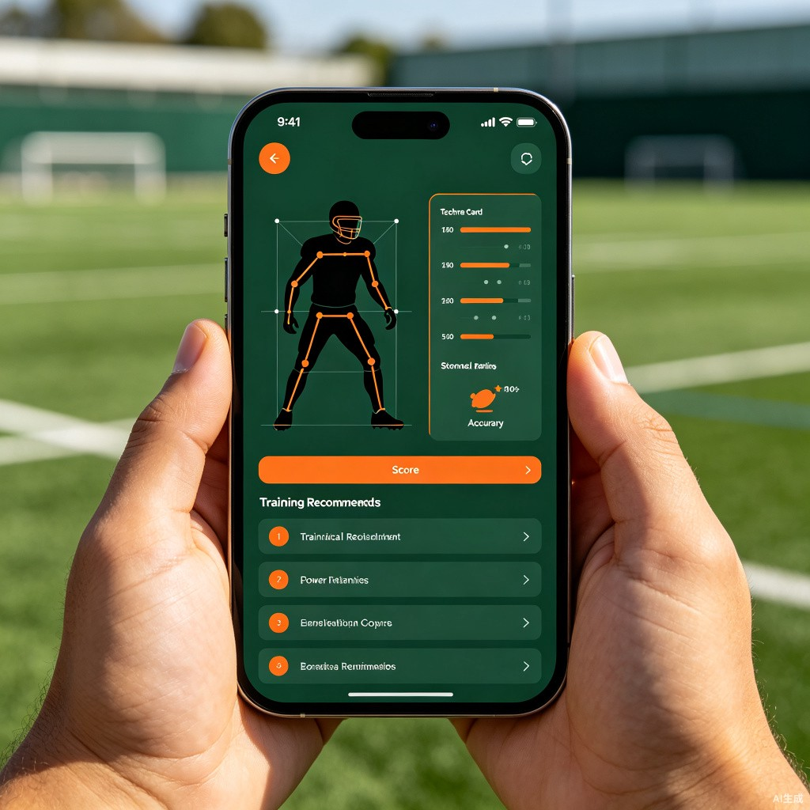

1创意介绍
AI 足球教练是一款面向草根足球爱好者的 AI 技术动作分析工具。用户只需用手机拍摄一段自己踢球的视频（射门、传球、盘带等），AI 自动识别动作姿态、分析技术细节，给出针对性改进建议，并生成个性化训练计划。让每个踢球的人都能拥有"私人教练"。
解决什么问题
业余足球爱好者想提升技术但请不起教练；自己练球时不知道动作哪里不对；网上教程看得懂，但不知道自己做得对不对。
灵感来源
踢野球时经常看到球友动作变形却不自知；自己练任意球拍了视频也不知道怎么分析；业余球员缺乏专业反馈渠道，技术瓶颈难以突破。
产品形态
微信小程序 + 手机 App，AI 姿态识别 + 技术动作分析 + 个性化训练计划 + 进步曲线追踪。
2目标用户及痛点
核心用户群体
业余足球爱好者（学生、上班族、野球党）、青少年足球学员、业余球队队员——那些热爱足球、想提升技术但缺乏专业指导的群体。
典型使用场景
"周末一个人在球场练任意球，拍了段视频想看看动作哪里有问题，但回看也看不出所以然。想找教练指点，一次课几百块，而且不知道教练靠不靠谱。"
当前痛点
- 普通人练球缺乏即时反馈，不知道自己动作对不对
- 网上教程只能看不能练，缺乏互动性和个性化指导
- 请私教费用高（一次 200-500 元），且时间不灵活
- 青少年足球培训中，教练无法同时关注每个学员的动作细节
3核心功能流程
整个使用流程极简：拍摄 → 识别 → 分析 → 训练。AI 贯穿每一个环节，让你像拥有私人教练一样精准提升技术。
flowchart LR
A[📹 拍摄踢球视频] --> B[🔍 AI 姿态识别
骨骼关键点提取]
B --> C[⚖️ 与标准动作库
逐帧对比]
C --> D[📊 生成技术分析报告
评分 + 问题标注]
D --> E[📋 推荐针对性
训练方案]
E --> F[📈 记录进步曲线
持续追踪]
亮点功能
| 功能 | 说明 |
|---|---|
| 📹 AI 动作捕捉 | 拍摄射门/传球/盘带等动作，AI 提取骨骼关键点，精准追踪身体姿态 |
| 🎯 技术评分 | 对支撑脚位置、触球部位、摆腿幅度、身体平衡等维度自动打分 |
| 📊 对比分析 | 与专业球员标准动作库叠加对比，红色标注偏差位置，一目了然 |
| 📋 训练计划 | 根据薄弱环节自动生成个性化训练方案，精准定位问题 |
| 📈 进步曲线 | 记录每次训练数据，生成技术成长趋势图，可分享到朋友圈 |
| ⚽ 野球记录 | 比赛时开启记录模式，AI 估算跑动距离、传球次数、射门次数等数据 |
4产品界面预览
界面设计遵循"专业、简洁、动感"的原则，让技术分析变得直观易懂，激发用户的训练热情。

5价值与意义
90%
效率提升
将"发现问题 → 纠正动作"的周期从几周缩短至几分钟。AI 即时分析视频，精准定位技术问题，让练习事半功倍。
10x
成本降低
相比私教课 200-500 元/次，AI 足球教练提供免费或极低成本的专业级技术分析，让更多人享受到专业指导。
∞
社会价值
降低足球技术提升的门槛，让青少年和草根爱好者也能获得专业指导，推动大众足球水平提升，助力全民健身。
让每一次触球都变得更好
AI 足球教练不只是一个分析工具，它是每个足球爱好者口袋里的私人教练——让每一次训练都有反馈，每一点进步都看得见。
生活娱乐
AI 姿态识别
小程序
全民健身